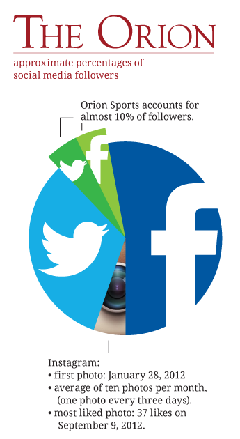

Orion learns lesson on spending;
positive reviews on revamp
by Kylie Munoz
The Orion has made a few changes, including a new image and slimmer waste line.
And, yes, that’s “waste,” as in fewer pages and smaller press runs, in order to bring the student-run newspaper’s spending back into line with its revenues.
Overspending and a lack of sufficient advertising prompted the cutbacks, said Ally Dukkers, editor-in-chief for The Orion during spring 2012, when the cutbacks were made.
The paper was around $70,000 in debt in the beginning of the semester, Dukkers said. Staff started saving money by cutting the paper from four sections to two, which significantly reduced the news hole with roughly the same amount of space for advertisements.
Print advertising, from which The Orion receives the bulk of its revenue, has declined and has not been replaced with online revenues, said Dave Waddell, who advised for The Orion for 15.5 years prior to his retirement from the full-time faculty in December 2011.
With the decline of advertising, the print edition of The Orion needed to shrink, he said.
“I think The Orion was a victim of the same problems that have confronted all newspapers,” Waddell said. “It just came a little bit later.”
The student reaction has been largely positive, Dukkers said.
“Some people wrote me e-mails in the beginning asking, ‘Where is the crossword puzzle?’" Dukkers said. “But other than that, I think that everyone said it was still looking really good and the design quality was really good.”
Kacey Gardner, current editor-in-chief for The Orion, looks at the cutbacks as a positive thing for the newspaper because it has forced the staff to be more selective.
In the past, editors could make their section as big as they wanted, Gardner said.
“But now with the cutbacks, it kind of forces us to only include the best stuff for print or the stuff that makes the most sense for print versus online,” she said.
Gardner was doing an internship at The Sacramento Bee in summer 2012 and was really excited about digital first, said Mark Plenke, current adviser for The Orion. Digital first means when news happens, it is distributed immediately via a website or social media, such as Facebook or Twitter.
Digital first was Plenke’s background coming in. He had just come off sabbatical where he created and produced a hyper-local website—a “community paper but not on paper,” he said.
The sports section in The Orion is a great example of digital first, Plenke said. Instead of waiting until Wednesday to report a Friday soccer game or Saturday volleyball tournament, the sports staff will live tweet from the game so The Orion’s audience instantly knows if Chico State won the game.
This doesn’t mean that the sports staff won’t put stories in the Wednesday paper about the game; they just won’t emphasize it as much because The Orion had reported it five days earlier, he said.
“I think of all the things that they’ve done that is one real sign of how digital first actually is supposed to work,” Plenke said. “The sports guys have done a great job.”
There are four or five stories that will go into print in the sports section depending on the amount of space that week, said Blake Mehigan, sports editor for The Orion, usually one full page and two half pages for content.
“Generally speaking, everyone’s been able to get their stories in print, with an exception of a couple,” Mehigan said. “Also, part of that is having a smaller staff and also cutting back on the length of the stories allows for more people to be featured in the paper.”
Along with smaller print editions, The Orion has been making other changes. The newspaper has revamped its use of social media, specifically live tweeting the news via Twitter (@theorion_news), Gardner said.
“Basically my big goal for the semester was to push us to be daily digital and to have on-the-spot reporting,” Gardner said. “We’re not just focused on the weekly print paper anymore; this is about getting the news to readers immediately.”
Another example of The Orion’s improved use of multimedia platforms is the paper’s webcast, Plenke said.

The Orion staff first takes a look at what they have reported, he said. The staff then shoots footage, does on-camera interviews and produces a 3-minute to 3.5-minute webcast that features a traditional anchor, weather and sports. The webcast is then put on The Orion’s website.
The webcasts started out slowly, with the crew mostly reading the news.
“Now you’ll see a full-video story about something, and the weather people have kind of become personalities,” Plenke said.
The Orion’s improved use of social media has been noticed and praised by readers, Gardner said.
“It’s just been amazing,” she said. “Our followers have gone up, our ‘likes’ have gone up and we’ve had people say, ‘Thank you, we can rely on you as a source for Chico State news.’”
As far as the future of The Orion, the size of the newspaper will most likely stay the same, Gardner said.
And the changes that have been made to the digital aspects of the The Orion will continue to grow and improve, Plenke said.
“By doing a better job with digital, I think the audience is served much better,” he said.
The emphasis on digital first has the added benefit of doing a better job of preparing students for careers because they have the skills employers are looking for, Plenke said.
The Orion becoming a tighter publication is a positive, and it’s just one of the aspects that make The Orion better than other college newspapers, Waddell said.
The primary reason is the level of student commitment that has gone into The Orion semester after semester, he said.
“Even before I got here, the commitment was very, very strong, and it’s still there and that’s what separates The Orion from a lot of student newspapers,” Waddell said.